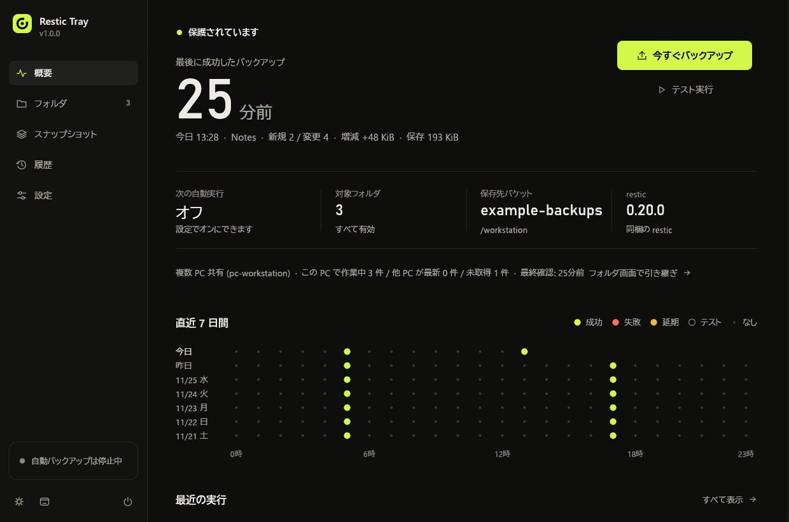
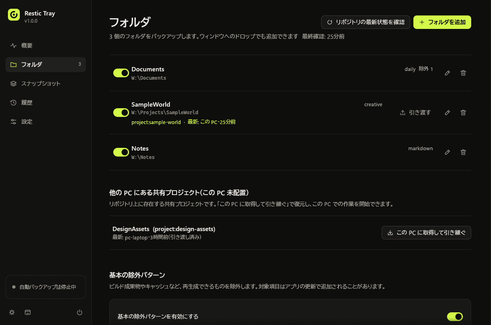
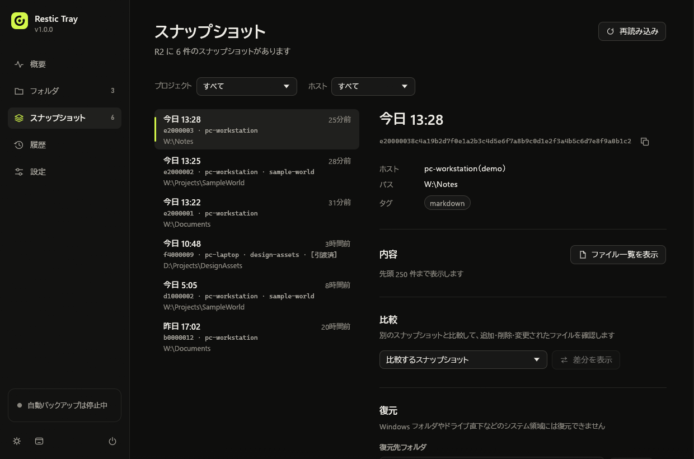
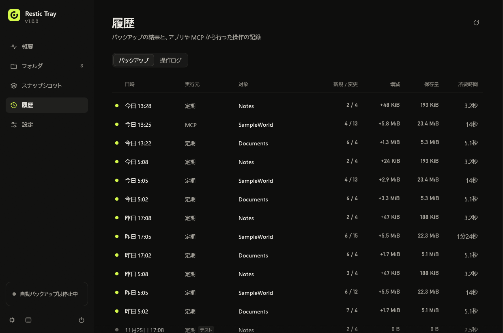

- v1.0.0
- Windows 10/11 x64
- MIT
- テレメトリなし
Cloudflare R2 への暗号化バックアップを、Windows トレイで静かに。
Cloudflare R2 と Restic を用いてクライアント側暗号化バックアップを定期実行する、22 ツール MCP サーバー内蔵の純 Rust 製 Windows タスクトレイ常駐アプリ。未コミットの作業ファイルやバイナリ素材も自分の R2 バケットへ保存し、アプリなしでも復元できます。





-
AES-256 + DPAPI送信前に PC 上で暗号化し、認証情報は
credentials.datへ分離保存。 -
エグレス料金 $0Cloudflare R2 の S3 互換 API に直接接続。復元や読み戻し確認の転送料が不要。
-
22 MCP ツール
--mcp単一バイナリ内蔵。名前付きパイプ相互認証と破壊的操作のオプトイン保護。 -
アプリ非依存標準 restic リポジトリ形式（BSD-2-Clause）。公式
resticCLI だけでも復元可能。
なぜ Git や手動スクリプトではなく Restic Tray を使うのか
Git はコミット済みの履歴を管理する道具です。Restic Tray は作業中のフォルダ全体を暗号化スナップショットし、過去の任意の時点へ戻せる状態を維持します。
Git はバックアップではない
未コミットの編集、未追跡ファイル、stash、未 push ブランチ、Unity の大きなバイナリ素材はドライブ故障で失われます。Restic Tray は .git を含めフォルダ全体をスナップショットしつつ、node_modules/ や target/、Unity の Library/ など再生成できるキャッシュを既定で除外します。
送信前に暗号化、ロックインなし
restic がすべてのデータとファイル名を PC 上で AES-256-CTR + Poly1305-AES で暗号化し、重複排除で差分チャンクだけを送ります。パスワードは PC の外に出ず、万一このアプリを使わなくなっても公式 restic コマンドだけで復元できます。
エグレス無料の Cloudflare R2 に直接保存
restic 標準の s3: バックエンドで Cloudflare R2 へ直接接続します。データ取り出しの帯域課金がないため、復元や定期的な読み戻し確認も気兼ねなく回せます。作者運営のサーバーやテレメトリ通信は一切ありません。
WebView なしの低負荷常駐と MCP 連携
eframe/egui と tray-icon による純 Rust 構成。トレイ格納中は描画ループを止めて CPU 消費をほぼゼロに保ちながら、定期スケジューラ・未実施アラート・AI エージェント向け MCP ブリッジが稼働し続けます。
どのような機能と安全設計が標準で組み込まれているか
DPAPI による秘密情報隔離、定期的な読み戻し検証、ローカル監査ログ、破壊的操作のオプトイン保護を初期状態で備えています。
Windows DPAPI で秘密情報を隔離
R2 の API キーと Restic パスワードは config.json へ一切書かず、DPAPI + 二次エントロピー + Zeroize で config\credentials.dat に分離保存。restic.exe には環境変数経由でのみ渡します。
自動読み戻し確認と未実施通知
既定で 7 日ごとに保存データの 5% を実際に読み戻して検証し（restic check --read-data-subset）、異常時や 48 時間以上成功がない場合に Windows トースト通知で知らせます。
22 ツール内蔵 MCP サーバー
Claude Code や Cursor から restic-tray.exe --mcp を登録し、状態確認・テスト実行・差分確認・安全復元が可能。Prune・バケット削除・引き継ぎは既定で無効（オプトイン）です。
Unity 対応の賢い除外ルール
依存キャッシュ・目印ファイル（CACHEDIR.TAG、SourceAssetDB、pyvenv.cfg）・Unity プロジェクト直下の生成物を自動除外。Assets/ や Packages/ 内の同名フォルダは守り抜きます。
ローカル SQLite (WAL) 履歴と監査ログ
バックアップごとの新規・変更件数、前回比の増減、保存量、Snapshot ID、所要時間と、GUI・トレイ・MCP からの操作監査ログを r2_restic_history.db に記録します。
多段ガード付き R2 削除と複数 PC 引き継ぎ
内蔵 S3 クライアントによるプレフィックス／バケット削除は Dry-Run 事前集計・バケット名手入力・1.5 秒長押しで誤操作を防止。実験的機能として複数 PC 引き継ぎも備えます。
基本仕様
Restic Tray v1.0.0 は MIT ライセンス・無料で使える Windows x64 向けの純 Rust 製 Cloudflare R2 バックアップアプリです。
| 項目 | 仕様 |
|---|---|
| 製品名 | Restic Tray（restic-tray） |
| 対象バージョン・同梱 restic | v1.0.0（SHA-256 検証済みの公式 restic.exe v0.20.0 を同梱） |
| ライセンス・価格 | MIT License・無料（$0 / オープンソース） |
| 対応 OS | Windows 10 / Windows 11 / Windows Server 2016 以降（x64・TLS 1.2 以降必須） |
| 実行構成 | 純 Rust（eframe/egui 0.37、tray-icon 0.26、SQLite WAL）。WebView やブラウザランタイム不要 |
| 保存先 | Cloudflare R2（s3:https://<accountId>.r2.cloudflarestorage.com/<bucket>[/<prefix>]・エグレス料金無料） |
| 暗号化 | PC 上でのクライアント側暗号化（AES-256-CTR + Poly1305-AES MAC + scrypt、標準 restic 形式） |
| 秘密情報の保存 | Windows DPAPI + 二次エントロピー + Zeroize で config\credentials.dat へ隔離保存 |
| 内蔵 MCP サーバー | 22 ツール（--mcp stdio JSON-RPC 2.0、ローカル名前付きパイプ相互認証、ヘッドレスフォールバック） |
| 画面言語 | デスクトップ GUI・MCP ツール説明は日本語のみ（公式サイト・ドキュメントは日英両対応） |
| テレメトリ・ロックイン | テレメトリなし・外部サーバーなし・公式 restic CLI 単体でいつでも復元可能 |
restic CLI + タスクスケジューラとの違い
スクリプト自作と保守を好む場合は restic CLI 単体で足ります。Restic Tray は DPAPI 認証情報隔離、Unity 対応の自動除外、定期読み戻し検証、未実施通知、内蔵 MCP サーバーを標準で提供します。
| 項目 | Restic Tray | restic コマンド + タスクスケジューラ |
|---|---|---|
| 設定の方法 | デスクトップ画面と config.json |
コマンド、環境変数、スクリプト |
| 秘密情報の保存 | Windows DPAPI（credentials.dat）+ Zeroize |
利用者が管理する |
| R2 の接続先 | アカウント ID・バケット・プレフィックスから自動組み立て | URL と環境変数を手で書く |
| Unity を考えた除外 | 既定で組み込み（プロジェクト直下・目印ファイル） | 自分で除外リストを書く |
| 失敗・未実施の通知 | Windows トースト通知（既定 48 時間） | 自分で用意する |
| 定期的な読み戻し確認 | 既定で 7 日ごとに 5% を自動検証 | 別にタスクを設定する |
| AI エージェント操作 | 22 ツール内蔵 MCP サーバー（--mcp） |
なし |
| 対応 OS と保存先 | Windows 10 以降 x64 と Cloudflare R2 のみ | restic が対応するすべて |
v1.0.0（Windows x64）の入手と検証方法
3 形式すべてに SHA-256 検証済みの公式 restic.exe v0.20.0 を同梱しています（Windows 10 / Windows Server 2016 以降および TLS 1.2 以降が必須）。
NSIS インストーラ
Restic.Tray_1.0.0_x64-setup.exe
%LOCALAPPDATA%\Programs\Restic Tray へユーザー単位で導入。常駐アプリや --mcp 起動中でも安全に上書き更新できます。
MSI インストーラ
Restic.Tray_1.0.0_x64_ja-JP.msi
標準の Windows Installer 形式（ユーザー単位導入）で配布管理したい環境向け。
Portable ZIP
Restic.Tray_1.0.0_x64-portable.zip
任意のフォルダに展開し、同梱の restic.exe とともに restic-tray.exe を直接起動します。
# 1. 同じリリースの SHA256SUMS.txt とハッシュを照合する
Get-FileHash -Algorithm SHA256 .\Restic.Tray_1.0.0_x64-setup.exe
Get-Content .\SHA256SUMS.txt
# 2. GitHub Artifact Attestation（ビルド来歴証明）を検証する（GitHub CLI `gh` が必要）
gh attestation verify .\Restic.Tray_1.0.0_x64-setup.exe --repo nayuengin/restic-trayドキュメント一覧
導入・チェックサム検証、Cloudflare R2 準備、日々の運用、MCP 統合、バックアップと復元、トラブルシューティングを網羅しています。
よくある質問（Q&A）
暗号化・PC 紛失時の復旧・自動起動・Unity 除外・プライバシーに関する主な質問と回答です。全 10 問の FAQ とサポート方針を見る
Cloudflare はバックアップしたファイルの中身を読めますか？
読めません。ファイルの中身・ファイル名・メタデータはすべて送信前に PC 上で restic が AES-256-CTR + Poly1305-AES で暗号化し、パスワードは PC の外に出ません。
PC をなくしたら復元できますか？ パスワードを忘れたらどうなりますか？
リポジトリのパスワードを別の場所に控えてあれば新しい PC から復元できます（R2 の API トークンは Cloudflare ダッシュボードで再発行可能）。credentials.dat は元の PC のその Windows ユーザーでしか復号できないため、パスワードを失うと R2 上のバックアップは二度と復元できません。
Windows を起動したら自動で動きますか？
現時点では自動登録されません。定期バックアップと未実施通知はアプリが動いている間だけ働くため、スタートアップフォルダ（Win + R → shell:startup）に restic-tray.exe --minimized のショートカットを置いてください（自動起動の手順）。
Unity の Library フォルダがバックアップに入っていないのはなぜですか？
Unity プロジェクト直下の Library、Temp、Logs、obj、Build、Builds、Assets\SerializedUdonPrograms は再生成できるキャッシュのため、容量と転送時間を節約する目的で既定で除外しています（useBasicExcludes: true）。Assets や Packages 内の同名フォルダは除外されません。
自分の R2 バケット以外にデータを送信しますか？
送信しません。作者運営のサーバー、テレメトリ、自動更新確認の通信はいずれもありません。新リリースの通知は GitHub リポジトリの Watch → Custom → Releases をご利用ください。